1-2. Stworzenie projeku
Zrzut utworzonego projektu i jego przykładowe stylowanie - może się zmienić^^:
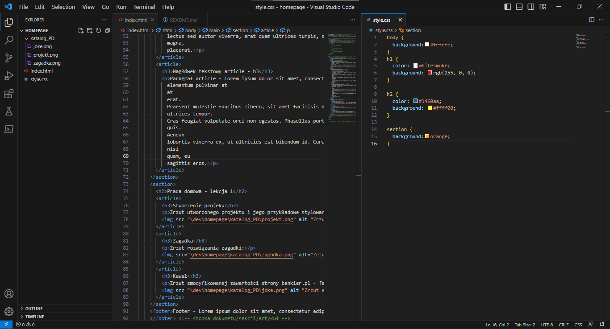Zrzut utworzonego projektu i jego przykładowe stylowanie - może się zmienić^^:
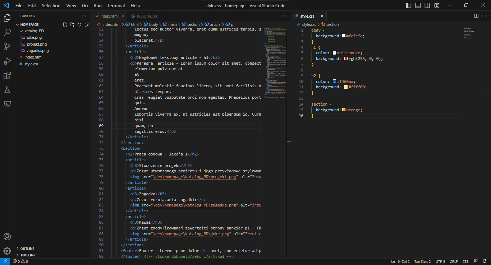Zrzut rozwiązania zagadki:

Zrzut utworzonego schematu zmywania naczyń w programie draw.io:

Zrzut zmodyfikowanej zawartości strony Bankier.pl - fake:

Zrzut do utworzonej tablicy w Trello do śledzenia postępów podczas kursu:
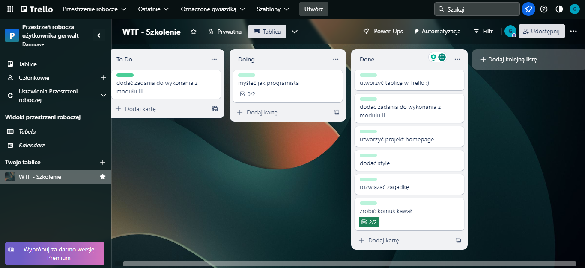Zrzut utworzonego konta GitHub oraz ekranu głównego GitHub Desktop:
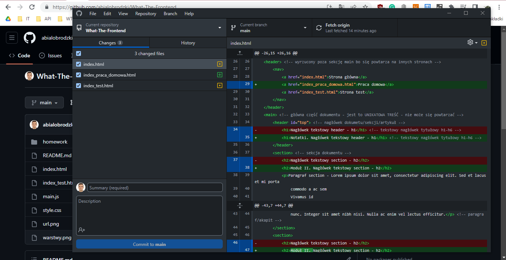Zrzut utworzonego repozytorium na GitHub:
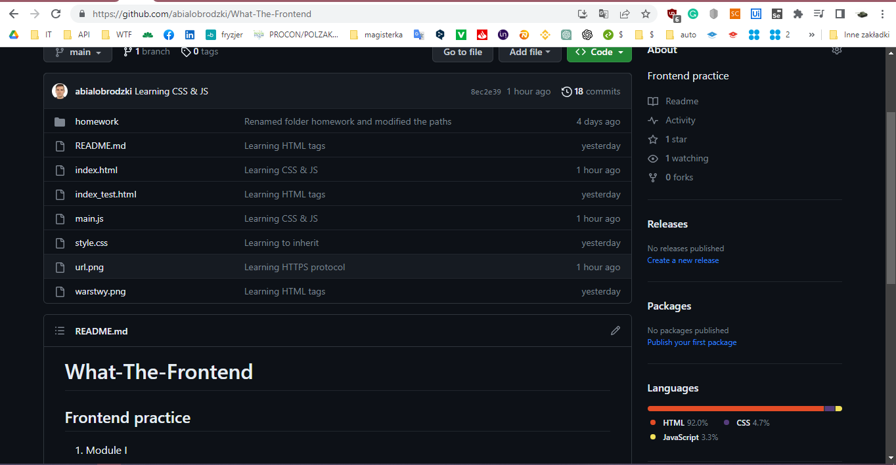Zrzut utworzonych commitów w projekcie:
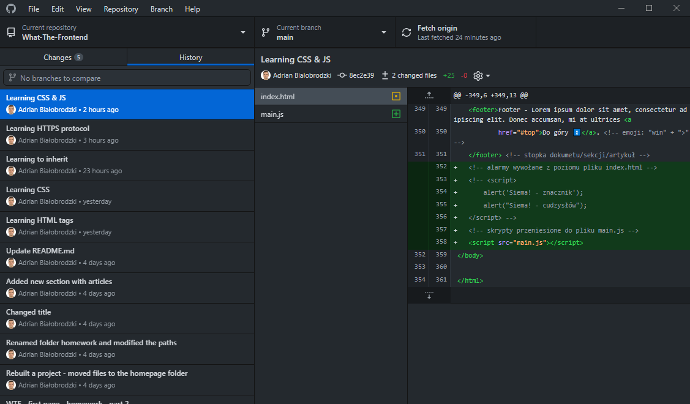Zrzut przebudowanego projektu wzbogaconego o dodatkowe strony i linki nawigacyjne do nich:
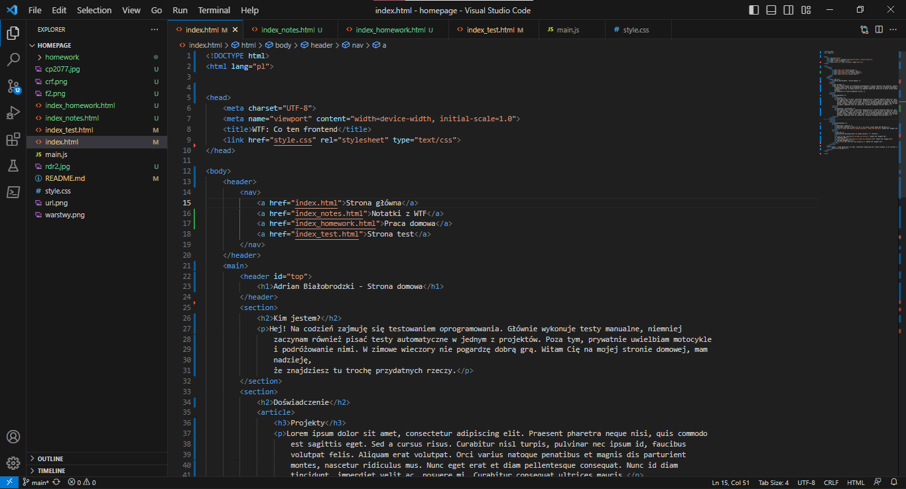Zrzut przebudowanego projektu wzbogaconego o stylowanie dodatkowych klas (nagłówki/paragrafy/stopka) na stronie głównej:
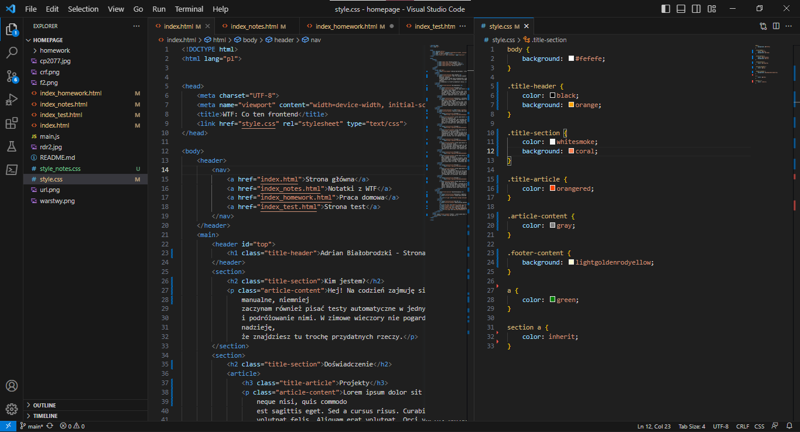Zrzut rozwiązania labiryntu:
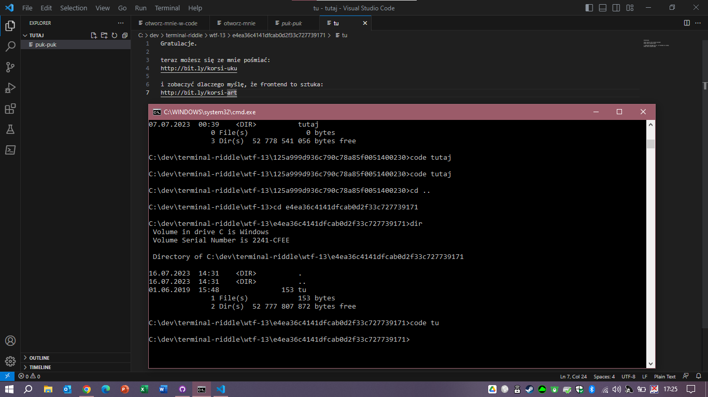Zrzut strony z przykładowym skryptem:
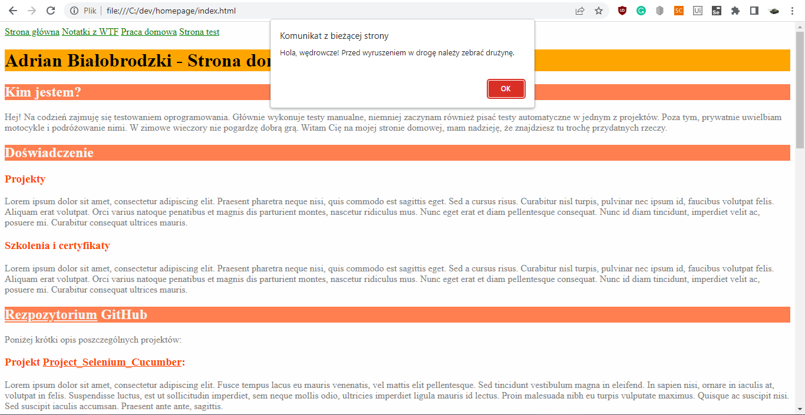Zrzut strony z zawatością konsoli:
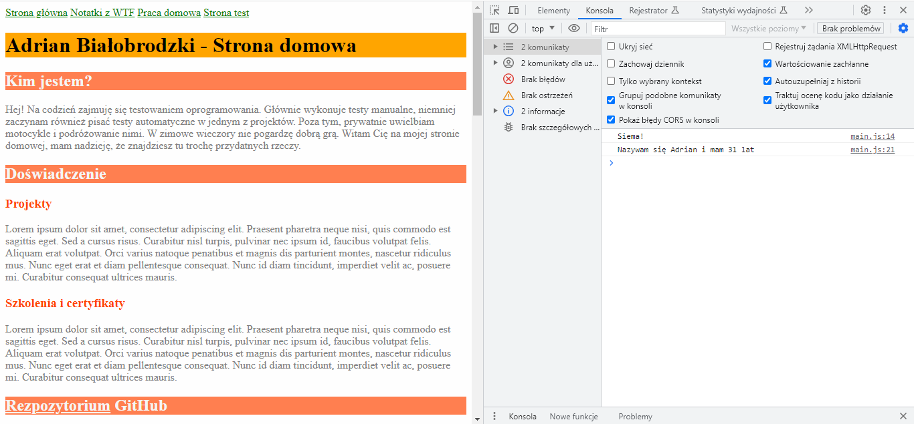Zrzut przebudowanego projektu po ujednoliceniu z wykorzystaniem standardów normalize.css: